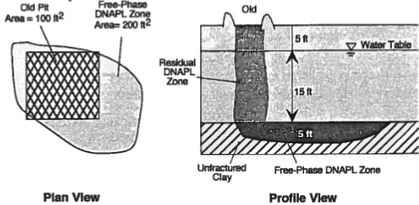
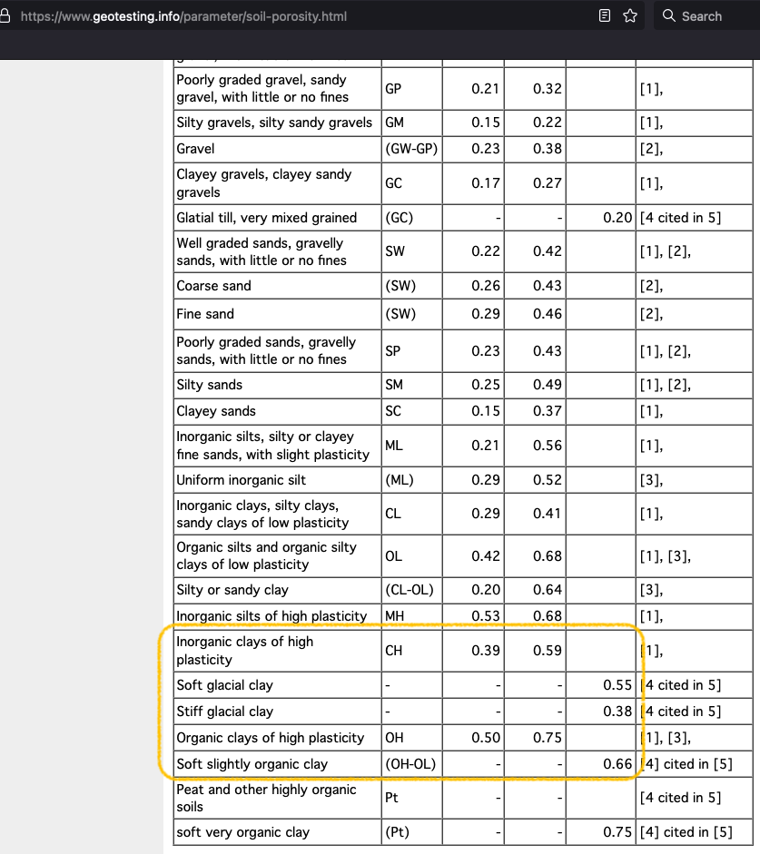
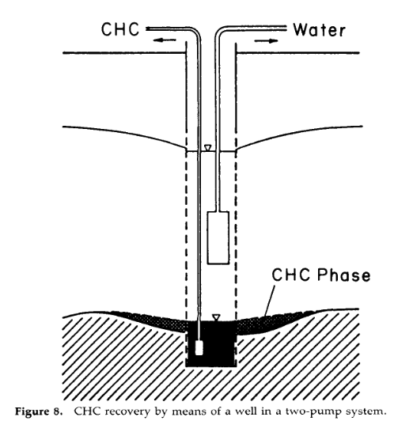

CE 5364 Groundwater Transport Phenemona
Fall 2023 Exercise Set 5¶
LAST NAME, FIRST NAME
R00000000
Purpose :¶
Apply selected analytical models for reactive transport
Problem 1 (Problem 11-1, pg. 594)¶
A contaminated site has been surveyed and a contaminated region \(100~ft. \times 150~ft. \times 15~ft.\) was delineated. The average concentration of total petroleum hydrocarbons (TPH) in soil is \(10,000~\frac{mg}{Kg}\)
Determine:
The total mass of contaminants at the site in kilograms. Assume the soil has a specific gravity, \(SG _{soil} \approx 2.0\)
Estimate total volume of petroleum hydrocarbons released assuming 50% of the hydrocarbins are lost to volatization, biodegredation, and dissolution (report the answer in gallons). Assume the hydrocarbons were gasoline with a constant specific gravity, \(SG_{\text{gasoline}} \approx 0.8\)
Estimate the residual saturation of the hydrocarbon-soil system. Assume soil porosity is, \(n=0.35\)
# Enter your solution below, or attach separate sheet(s) with your solution.
iZV = 100*150*15
impacted_zone_volume = iZV/(3.28**3) # convert to cubic meters
print("Impacted Zone Volume : ",round(impacted_zone_volume,1)," cubic meters ")
Impacted Zone Volume : 6376.2 cubic meters
tph = 10000 # mg/Kg
rho_soil = 2.0*1000 #Kg/m^3
rho_tph = 0.8*1000 #Kg/m^3
mass_soil_impacted = rho_soil*impacted_zone_volume
mass_tph = tph*mass_soil_impacted*(1/1000)*(1/1000) # convert to kilograms
loss_fraction = 0.50 # HC losses
volume_soil_tph = mass_tph/rho_tph
volume_release_tph = volume_soil_tph/loss_fraction
volume_release_tph = volume_release_tph*(3.28**3)*7.48 # convert m^3 to gallons
print("Mass Soil Impacted : ",round(mass_soil_impacted,1)," kilograms ")
print("Mass TPH in soil : ",round(mass_tph,2)," kilograms ")
print("Initial TPH Volume : ",round(volume_release_tph,1)," gallons ")
Mass Soil Impacted : 12752372.3 kilograms
Mass TPH in soil : 127523.72 kilograms
Initial TPH Volume : 84150.0 gallons
porosity = 0.35
pore_volume = porosity*impacted_zone_volume
saturation_tph = volume_soil_tph/pore_volume
print("Impacted Zone Pore Volume : ",round(pore_volume,1)," cubic meters ")
print("TPH saturation in soil : ",round(saturation_tph,2)," ")
Impacted Zone Pore Volume : 2231.7 cubic meters
TPH saturation in soil : 0.07
Problem 2 (Problem 11-2, pg. 594)¶
A sampling program at a Supermanfund site indicated the following DNAPL zones:
A pool of free phase DNAPL in a stratigraphic depression in an unfractured clay. The pool is 200 \(ft^2\) in area and 5 \(ft\) thick.
A zone of residual DNAPL extending directly underneath an old disposal pit 100 \(ft^2\) in area. The residual zone extends through the 5 \(ft\) thick unsaturated zone and 15 \(ft\) through the saturated zone until it reaches the DNAPL pool.

Supporting data:
Residual saturation in the unsaturated zone: |
0.10 |
Residual saturation in the saturated zone: |
0.35 |
Saturation in the free-phase zone: |
0.70 |
Average porosity in water zone: |
0.30 |
Determine:
The total volume of DNAPL at the site
The recoverable volume using ordinary pumping.
# Enter your solution below, or attach separate sheet(s) with your solution.
Assuming the clay portion depicted has porosity of 50%

dnapl_pool_vol = 0.5*0.7*200*5 # cubic feet; porosity*saturation*volume
pore_volume_unsat = 0.30*100*5 # cubic feet
pore_volume_sat = 0.30*100*15 # cubic feet
dnapl_unsat = 0.10*pore_volume_unsat
dnapl_sat = 0.35*pore_volume_sat
total_dnapl = dnapl_pool_vol+dnapl_unsat+dnapl_sat
print("DNAPL free phase volume : ",round(dnapl_pool_vol,1)," cubic feet")
print("DNAPL unsaturated zone volume : ",round(dnapl_unsat,1)," cubic feet")
print("DNAPL saturated zone volume : ",round(dnapl_sat,1)," cubic feet")
print("DNAPL total volume : ",round(total_dnapl,1)," cubic feet")
DNAPL free phase volume : 350.0 cubic feet
DNAPL unsaturated zone volume : 15.0 cubic feet
DNAPL saturated zone volume : 157.5 cubic feet
DNAPL total volume : 522.5 cubic feet
Recoverable volume:
Using something like:

One could only expect to recover from the free phase pool. Assuming the clay goes to a residual similar to the saturated zone (35% of the pore volume contains NAPL)
pore_volume_clay = dnapl_pool_vol
unrecoverable = pore_volume_clay*0.35
recoverable = pore_volume_clay - unrecoverable
print("DNAPL recoverable volume : ",round(recoverable,1)," cubic feet")
DNAPL recoverable volume : 227.5 cubic feet
Problem 3 (Problem 11-4, pg. 595)¶
Gasoline is found in a monitoring well with \(SG=0.80\). A total depth of 6 \(ft\) of gasoline is found in the well.
Determine:
Estimated thickness of free-phase LNAPL in the formation.
# Enter your solution below, or attach separate sheet(s) with your solution.
Sketch situation

Apply equation 11.18 as follows:
head_well = 6.0 # feets
rho_napl = 0.8*62.4 # lbf/ft^3
rho_water = 1.00*62.4 # lbf/ft^3
head_formation = head_well*(rho_water-rho_napl)/rho_napl
print(" NAPL formation thickness : ",round(head_formation,1)," feet ")
NAPL formation thickness : 1.5 feet